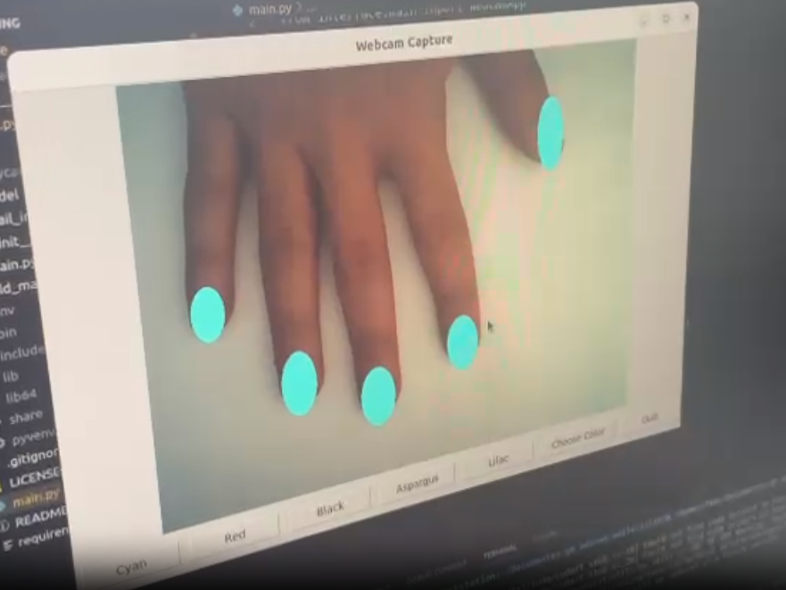
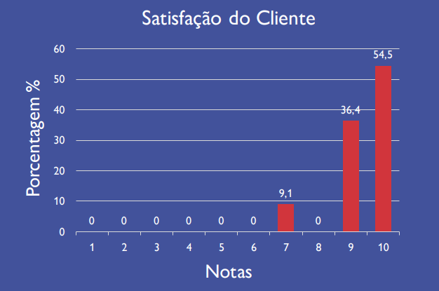
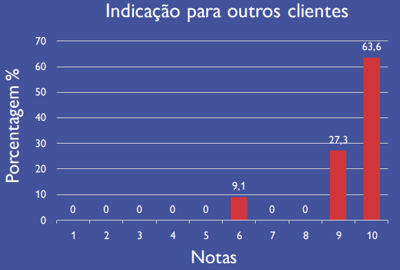

Projeto Final: Power Nail
Grupo: Pixel Power
1. Resumo
O projeto apresenta um software que simula a aplicação de esmalte em unhas através de processamento de vídeo, destinado a clientes de serviços de manicure e estudiosos de processamento de vídeo. Utilizando as bibliotecas OpenCV e TensorFlow, o software captura imagens da mão do usuário, aplica cores de esmalte escolhidas em tempo real e exibe o resultado. Essa ferramenta visa facilitar a escolha de esmaltes para clientes e otimizar o trabalho dos profissionais.
2. Introdução
O projeto apresentado neste relatório visa descrever o processo de produção de um software destinado ao público interessado em serviços de manicure e a comunidade acadêmica que tem interesse no campo de estudo de processamento de vídeo. A ideia inicial consistiu na elaboração de um software capaz de simular em um vídeo como a unha de um usuário ficaria se fosse pintada de alguma cor. O usuário posiciona a sua mão na direção da câmera, e então o software faz a leitura da imagem e retorna a imagem da sua mão inteira com as unhas pintadas da cor de sua preferência. Diversos testes foram feitos com diferentes pessoas para testar a eficiência do software em reconhecer unicamente a parte das unhas e aplicar uma cor na área identificada. Adicionalmente, também houve o trabalho de trazer uma paleta de cores diversas que fossem próximas a realidade utilizada nos salões de beleza.
3. Materiais e Métodos
O objetivo final, o projeto pode ser utilizado como uma solução para diversos estabelecimentos que oferecem o serviço de manicure, facilitando a escolha do cliente que pode ter uma prévia de como ficará o serviço e ajudando o profissional a ter menos desperdício e mais eficiência com os produtos utilizados. 3.2 Modelagem Funcional do Sistema de Processamento de Visual: Tratando especificamente da primeira etapa de construção do software, foram utilizadas duas principais ferramentas para estruturar o código o OpenCV e o TensorFlow. O OpenCV (Open Source Computer Vision) é uma biblioteca popular e poderosa de visão computacional e processamento de imagens. Neste aplicativo de rastreamento de unhas, o OpenCV desempenha um papel crucial e fornece várias funcionalidades essenciais para o processamento de imagens e a visualização dos resultados. Abaixo estão algumas das razões pelas quais o OpenCV é importante para essa aplicação: Acesso à Câmera e Captura de Vídeo: O OpenCV permite acessar a câmera do dispositivo (Webcam) e capturar frames de vídeo em tempo real. Isso é fundamental para obter o fluxo contínuo de quadros a serem processados e rastreados. Processamento de Imagens: O OpenCV oferece uma ampla variedade de funções para o processamento de imagens, como conversão de cores, filtragem, operações morfológicas e suavização. Essas operações são usadas para pré-processar os quadros de vídeo, tornando-os mais adequados para a detecção de unhas. Detecção de Objetos: O OpenCV fornece recursos para detecção de objetos em imagens. Neste aplicativo, o OpenCV é usado para desenhar as elipses preenchidas ao redor das unhas detectadas, fornecendo informações visuais sobre suas posições. Visualização em Tempo Real: O OpenCV possibilita a exibição dos quadros de vídeo e dos resultados do rastreamento em tempo real. Isso é essencial para verificar o desempenho da aplicação e depurar problemas durante a execução. Desenho e Anotação: O OpenCV oferece funções para desenhar formas geométricas, retângulos, elipses e texto nas imagens. Isso é utilizado para criar os rótulos das unhas detectadas, melhorando a apresentação dos resultados. Blending e Composição: O OpenCV permite a combinação de imagens usando blending e técnicas de composição. Neste aplicativo, o blending é usado para reduzir a opacidade das elipses desenhadas, permitindo que a imagem original seja parcialmente visível por trás delas. Métodos específicos do OpenCV utilizados neste projeto: cv2.VideoCapture: Para acessar a câmera e capturar frames de vídeo. cv2.cvtColor: Para converter os quadros de vídeo de um espaço de cores para outro (BGR para YCrCb). cv2.GaussianBlur: Para aplicar o desfoque gaussiano nos quadros de vídeo. cv2.inRange: Para criar uma máscara filtrando os pixels dentro de um determinado intervalo. cv2.dilate: Para realizar operações morfológicas de dilatação na máscara. cv2.ellipse: Para desenhar as elipses preenchidas ao redor das unhas detectadas. cv2.putText: Para adicionar rótulos de texto nas imagens. A segunda biblioteca utilizada na construção do código foi o TensorFlow. O TensorFlow desempenha um papel crucial na aplicação de Rastreamento de Unhas ao fornecer recursos avançados para criação e execução de modelos de aprendizado de máquina, especialmente para tarefas de detecção de objetos. Aqui está a importância do TensorFlow para essa aplicação, juntamente com alguns métodos relevantes da biblioteca que foram utilizados: Modelo de Detecção de Objetos: O TensorFlow é amplamente utilizado para treinar e implantar modelos de detecção de objetos. Nesse caso, o modelo de detecção de objetos é fundamental para identificar as unhas nas imagens capturadas. Inferência de Modelo: O TensorFlow permite a execução eficiente de inferência (previsões) nos modelos treinados. Na aplicação de rastreamento de unhas, o TensorFlow é usado para executar a detecção de objetos nos quadros de vídeo capturados. Uso de Grafos: O TensorFlow trabalha com grafos de operações, permitindo otimizações eficientes e paralelização de cálculos. Na aplicação, o grafo é utilizado para carregar e executar o modelo de detecção de objetos. Interoperabilidade com NumPy e OpenCV: O TensorFlow pode interoperar bem com outras bibliotecas, como NumPy e OpenCV. Isso permite a conversão e manipulação eficiente de dados entre diferentes formatos de bibliotecas. Métodos específicos do TensorFlow utilizados nesta aplicação: tf.Graph(): Para criar um grafo de operações que contém o modelo de detecção de objetos. tf.gfile.GFile(): Para ler o arquivo do modelo pré-treinado no formato do Protocol Buffer. tf.import_graph_def(): Para importar a definição do grafo do modelo pré-treinado. tf.Session(): Para criar uma sessão de execução do TensorFlow. sess.run(): Para executar as operações no grafo e obter resultados. 3.3 Aplicação do Sistema de Processamento Visual O maior trabalho foi fazer esses componentes do código trabalharem juntos para gerar um output satisfatório. Dessa forma, o passo a passo para a execução do código foi: O aplicativo começa criando um grafo TensorFlow e carregando o grafo de inferência congelado pré-treinado (args["model"]) na memória. O modelo contém os pesos pré-treinados e a arquitetura para a detecção de objetos. Inicializando a Captura de Vídeo: O código inicializa a captura de vídeo usando cv2.VideoCapture(0) para acessar a câmera padrão (Webcam). O fluxo de vídeo é, então, processado em um loop. Capturando e Pré-processando os Quadros: No loop, cada quadro do fluxo de vídeo é capturado usando vs.read(). O quadro é, então, pré-processado usando a função process_image. O pré-processamento inclui a conversão do quadro para o espaço de cores YCrCb, aplicação de desfoque Gaussiano, criação de uma máscara para as unhas e realização de operações morfológicas. Executando a Inferência: O quadro pré-processado (res) é passado para a função run_inference, que utiliza o modelo TensorFlow carregado para realizar a detecção de objetos. Essa função retorna os retângulos delimitadores, os escores de confiança e os rótulos para as unhas detectadas. Processando os Resultados: A função process_results é chamada para processar os resultados da inferência. Ela filtra as detecções com baixa confiança e desenha elipses preenchidas ao redor das unhas detectadas. As unhas detectadas também são rotuladas com seus respectivos escores de confiança. Exibindo a Saída: O quadro processado (output) com as elipses preenchidas e os rótulos é exibido usando cv2.imshow("Output", output). Isso cria uma saída em tempo real do aplicativo de rastreamento de unhas. Continuando o Loop: O loop continua a capturar quadros da webcam, processá-los, realizar a inferência e exibir a saída. Isso permite que o aplicativo rastreie continuamente as unhas. Saindo do Loop: O loop continua até que o usuário pressione a tecla "q". Nesse ponto, as janelas do OpenCV são fechadas (cv2.destroyAllWindows()) e o loop é encerrado com um break, finalizando o aplicativo de rastreamento de unhas. Ao longo do processo, o aplicativo utiliza o modelo TensorFlow para a detecção de objetos, o OpenCV para o processamento e visualização das imagens, e o NumPy para operações com matrizes. A combinação dessas ferramentas permite que o aplicativo processe os quadros de vídeo, detecte as unhas, desenhe elipses preenchidas e exiba os resultados em tempo real. É importante observar que o sucesso do rastreamento de unhas depende da qualidade do modelo pré-treinado e do desempenho da detecção de unhas. Para obter resultados mais precisos, talvez seja necessário ajustar o modelo ou utilizar uma arquitetura mais avançada para a detecção de objetos. Para o usuário utilizar o sistema, o processo é bastante simples. Ao iniciar o código, e com o usuário com suas mãos posicionadas na plataforma, já é possível as mãos na tela do software com as cores padrão apresentada na interface inicial:
Além das cores sugeridas na interface inicial, o usuário pode escolher as cores que desejar clicando no botão “Choose Color”. Após clicar, uma barra com novas paletas de cores é apresentada:

3.4 Análise dos Resultados do Teste de Campo Após pesquisas feitas com os usuários do protótipo, foi possível averiguar se o uso foi satisfatório ou não. Com base no gráfico abaixo, os usuários atribuíram notas em relação a sua satisfação. E o resultado é que todos avaliaram o sistema com nota acima de 7.
Adicionalmente, foi feita uma pesquisa para saber se o usuário indicaria o sistema para outra pessoa. Essa indicação também foi parametrizada por notas. O resultado, vide gráfico abaixo foi bastante positivo:
3.5 Cronograma efetivo O projeto foi desenvolvido ao longo do mês de julho e agosto de 2023. Abaixo, como foram as etapas de desenvolvimento do projeto:

4. Conclusão
Em conclusão, o projeto desenvolveu um software que utiliza processamento de vídeo para simular a aplicação de esmalte em unhas, visando tanto os consumidores de serviços de manicure quanto a comunidade acadêmica interessada em processamento de vídeo. Através da combinação das bibliotecas OpenCV e TensorFlow, o software captura imagens da mão do usuário, aplica cores de esmalte escolhidas e exibe o resultado em tempo real. O processo de desenvolvimento envolveu a integração de componentes chave, incluindo o uso do OpenCV para acesso à câmera, processamento de imagens e detecção de objetos, e do TensorFlow para inferência de modelo de detecção de objetos. O aplicativo pode ser uma ferramenta valiosa para clientes ao escolherem cores de esmalte e para profissionais de manicure ao otimizarem seus serviços. No entanto, a eficácia do rastreamento de unhas depende da qualidade do modelo de detecção e da capacidade de ajustar a arquitetura para obter resultados mais precisos.
5. Referencias
OPENCV. Open Source Computer Vision. Disponível em: < https://docs.opencv.org/4.x/db/d28/tutorial_cascade_classifier.html >. Acesso em: 11 de ago. de 2023. OPENCV. Open Source Computer Vision. Disponível em: < https://docs.opencv.org/4.x/d2/d0a/tutorial_introduction_to_tracker.html >. Acesso em: 11 de ago. de 2023. TensorFlow. Disponível em: < https://www.tensorflow.org/?hl=pt-br >. Acesso em: 14 de ago. de 2023.